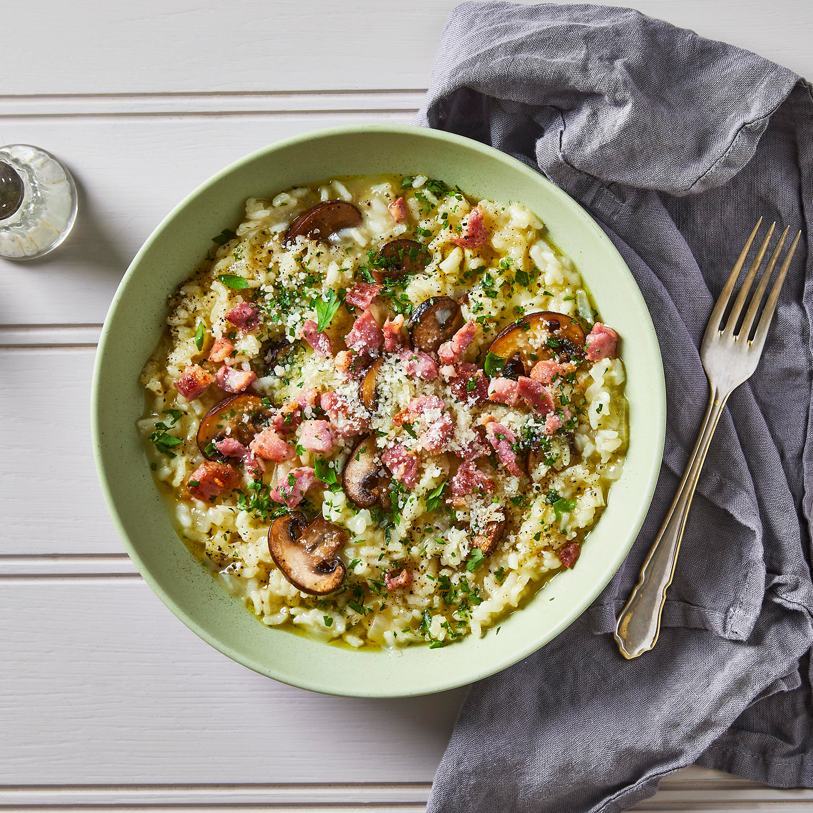
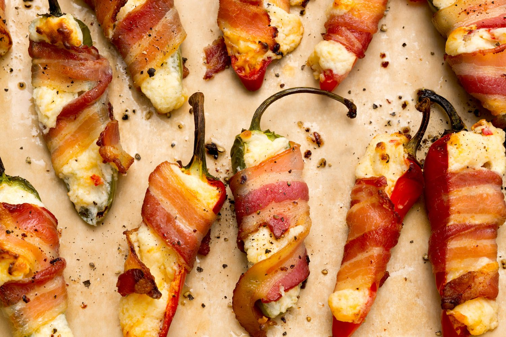

Spread both slices of lightly toasted sandwich bread with mayonnaise on one side only.
Add several leaves of lettuce on one piece of bread.
Add several slices of thickly sliced garden tomato on top.
Layer on 2-3 slices of crisp bacon over the tomatoes.
Top with second slice of lightly toasted sandwich bread.
Gently slice in half with serrated bread knife, being careful not to smush your sandwich.
Serve immediately with a dill pickle!

Bacon & mushroom risotto
15 MINUTE RECIPE
Ingredients:
1 tbsp olive oil
1 onion, chopped
8 rashers streaky bacon, chopped
250g chestnut mushroom, sliced
300g risotto rice
1l hot chicken stock
grated parmesan, to serve
Method:
Heat the oil in a deep frying pan and cook the onion and bacon for 5 mins to soften. Add the mushrooms and cook for a further 5 mins until they start to release their juices. Stir in the rice and cook until all the juices have been absorbed
Add the stock, a ladleful at a time, stirring well and waiting for most of the stock to be absorbed before adding the next ladleful – it will take about 20 mins for all the stock to be added. Once the rice is cooked, season and serve with the grated Parmesan.

Bacon Wrapped Jalapeno Poppers
30 MINUTE RECIPE
Ingredients:
6 large jalapenos
8 oz softened cream cheese or Neufchatel cheese
2 oz grated cheddar, jalapeno jack, or habanero cheddar